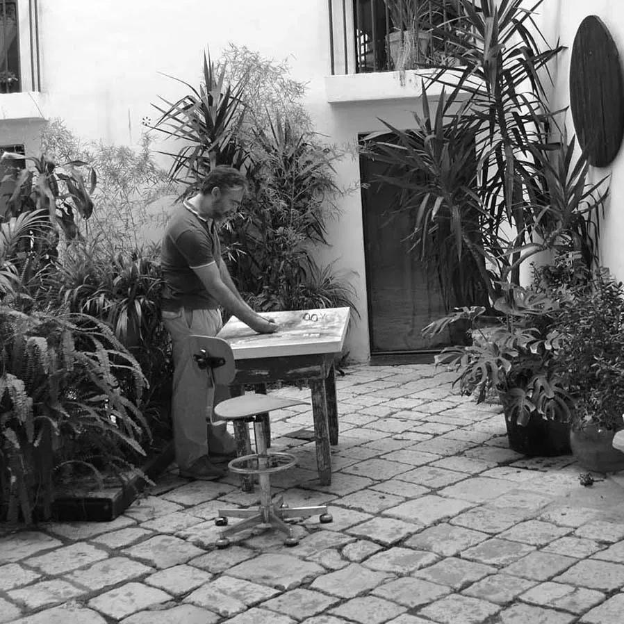

With more than two decades of artistic exploration, Michele Petrelli masterfully combines in his works vibrant elements of nature and humanity with the fascination of darker themes. Preferring to depict the enigmatic shadows of life, Michele's artistic journey has evolved significantly, embracing different representational techniques.
His artistic style is deeply evocative and immersive, characterized by a sense of unease and emotional intensity. The figures he portrays seem suspended between dream and nightmare, between the world of the living and a deeper, psychological dimension. His subjects often have lost or intense gazes, as if they are aware of a truth that the viewer can only intuit.
The compositions are charged with narrative tension, with bodies intertwining or distancing themselves, suggesting complex relationships of attraction and repulsion, suffering and connection. The use of color is equally significant: dark tones, deep greens, and murky yellows evoke a sense of decay and mystery, while bursts of red explode like signals of danger, passion, or wounds.
There is a constant search for humanity in a state of extreme vulnerability, with figures conveying a sense of loneliness even when in pairs. His works tell stories of fractured identities, tormented relationships, and bodies existing at the edge between presence and dissolution. It is an art that does not seek to reassure but rather to lay bare the fragility and intensity of the human experience.
When I was younger, after a carefree childhood and adolescence, I arrived without realizing it, on the threshold of an abyss. I felt that I could never go back but that the only way was through it. In doing so, however, I lacked the courage to keep my eyes open. Defeated then, I tried to turn back with a great dread inside me that I was running out of time. This terror became so great that I could no longer sleep and it amplified all my sensations. Everything brought me suffering. The beautiful things I saw and heard made me think of all that I had lost. While the bad ones described exactly where I ended up. I was trapped as some kind of ghost still wrapped in bone and flesh. Over the years, this fear of mine has grown weaker and weaker. However, the dark times still come back from time to time bringing me back to that otherworldly dimension. When they arrive, I can only wait for them to dissolve.
In recent years, I have formulated Radical Non-Dual Determinism (RNDD),
an inquiry into the illusion of the separate self.
Displayed
We're Your Huckleberry ~ Act I, 23-25 May 2024
Physical - Ghent, Belgium ARTCRUSH Project
⚜
ARTCRUSH gallery , 1-31 March 2024
Physical - Melbourne, Australia
⚜
ARTCRUSH Project , 13-19 February 2024
Physical - Gare du Midi Brussels, Belgium
⚜
Blue11art exhibition, October 2023
Physical - Time Square NYC, USA
⚜
WEGIL 14 - 17 September 2023
Physical - Largo Ascianghi, 5
(Trastevere) Roma
⚜
Medici 1563 Genesis exhibition, November - December 2022
Physical - Miami, USA
Miami Art Week
⚜
London exhibition, November 2022
Physical — Shoreditch, London ARTCRUSH Project
⚜
Ghent exhibition, October 2022
Physical — Ghent, Belgium ARTCRUSH Project
⚜
Disruption, October 2022
Physical
W1 Curates - Flannels London
⚜
Time Square, June 2022
Physical - The Medici Collections
⚜
35x35, January 2017
Physical - Permanent collection of the Copelouzos Family Art Museum
⚜
Sæsonåbning, udpluk af udstillingen, April 2014
Physical - Gallery Tornby - Bindslev - Denmark
⚜
AR[t]CEVIA - International Art Festival , September 2012
Physical - Palazzo dei Priori - Ancona
⚜
Tutto Quadra, November 2011
Physical - curated by Ilaria Miccoli - Bari
⚜
SpazioTempo, August 2011
Physical - Acaya Castle - Lecce
⚜
Le Visioni, November 2010
Physical - Literary Cafe - Roma
⚜
BrainProject.eu - Attraction, November 2007
Physical - Finalist of the international contest - Trieste